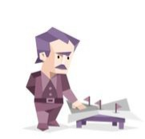

INTJ : شخصية المهندس

شخصية انطوائية ، حدسية ، عقلانية ، حازمة
كل ما تحتاج أن تعرفه عن شخصية المهندس بانهم المحللون، القادرون على تحليل المشاكل واستنباط الحل الأمثل للتخلص من ضائقة ما، هم الحريصون على تطوير الأنظمة، ويقومون بعمليات معقدة ومبتكرة في أدمغتهم لهذا الهدف
الخياليون و المفكرون الاستراتيجيون ، لديهم خطة لكل شيء
كل ما يبحث عنه هو الحقيقة
نقاط القوة
- الإستراتيجية والتخطيط للطوارئ
- إدارة الوقت بشكل فعال
- القدرة على حل المشكلات المُعقدة
- طَموح عميق الجُذور وقائد
- التعطش المستمر للمعرفة
- شخصية مخلصة واصحاب عزيمة
- التصميم بشكل مميز في كل ما يفعلونه
التواصـل
- يتحدث بِرسمية
- منغلق إلى حد ما وَبعيد
- مُحايد عاطفياً
الدوافـع
- تحديد وَتحقيق الأهداف الطموحة
- تخصيص الوَقت ليكون بمفرده
- التفكير تقديم أفكار وحلول جديدة
INTJ كأب و أم
يرغبون بأن يكون اطفالهم مستقلين واذكياء وقد لا يكونون حنوين ظاهريا ولكن سيكونون داعمين ومراعين لأطفالهم، سيعطون أطفالهم مساحة من اجل ان يسعى اطفالهم لبذل مجهود أكبر ويسؤمنون بهم ويتوقعون الكثير منهم بسبب ذلك
INTJ كطالب
الطالب الهاديء الذكي جدا ، غالبا ما يصحح ويثبت بالنهاية انه على حق .
نسبـة intj في العالم : 0.8%